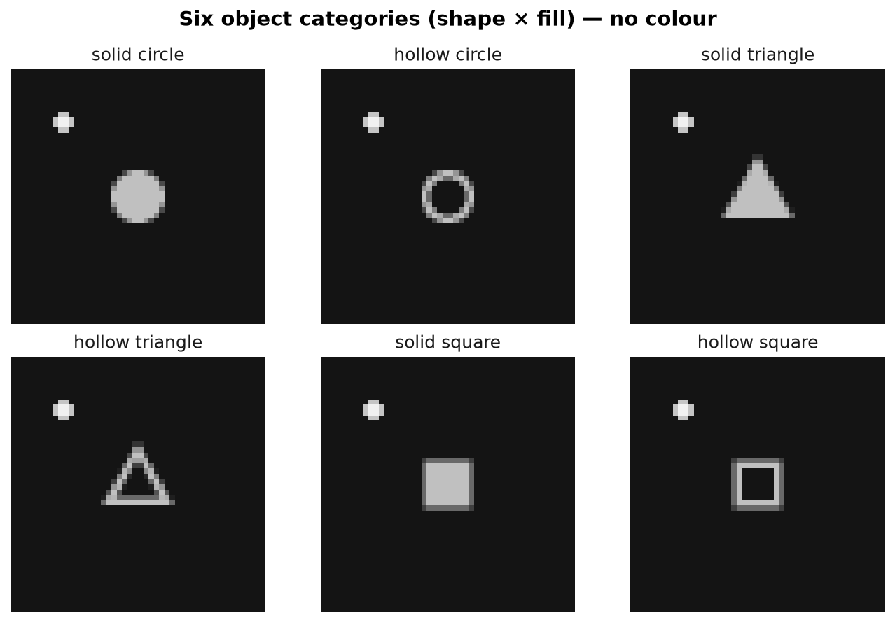
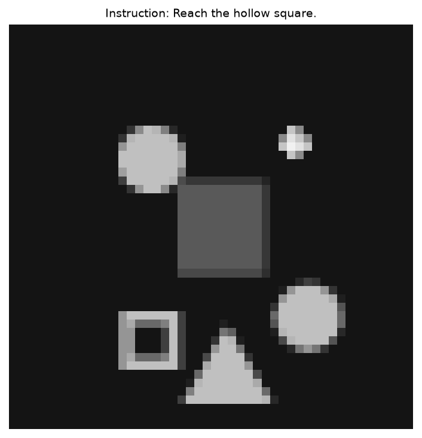
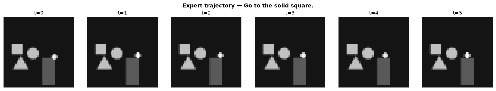

mini-wam
(action-chunk policy)
single-action classifier
(fits comfortably in 16 GB)
1 · Research question & hypothesis
Modern robotic WAMs/VLAs (e.g. π0.7) generate a visual subgoal with a lightweight world model, then condition a flow-matching action expert on it. This project asks whether that exact World-Model → Visual-Subgoal → Action-Expert structure can be reproduced in a tiny, controlled environment while preserving the information flow and training principle.
2 · System architecture
3 · The game environment
The environment is deliberately grayscale and colour-free so that object identity can only be recovered from shape × fill geometry — forcing real multimodal grounding instead of a "yellow = target" shortcut. Shapes are area-normalised to remove an "object size" shortcut too.

A sample scene

Expert trajectory (ground-truth data)

4 · Models
| Model | Params | Description |
|---|---|---|
| Simple policy (Baseline 1) | 6.35M | observation → single WASD classifier (cross-entropy) |
| Action-chunk policy (Baseline 2) | 11.49M | flow-matching 8-action chunk, no subgoal |
| World Model | 11.50M | conditional flow-matching subgoal generator (DiT) |
| Action Expert | 11.49M | flow-matching action chunk, conditioned on subgoal |
| Cascade WAM | — | World Model → subgoal → Action Expert (receding horizon) |
All models share a patch-embedding vision encoder (48×48 → tokens) and a small word-level Transformer language encoder. World Model and Action Expert use flow matching with a linear interpolation path and 4 Euler denoising steps at inference.
5 · Results — closed-loop success rate
Main results (test split, 200 episodes)
OOD benchmark (success %, 200 episodes per split)
| Split | Simple | Action-chunk | Cascade |
|---|---|---|---|
| test (in-distribution) | 52.5 | 64.5 | 57.5 |
| ood_combo (unseen shape×fill) | 53.0 | 57.0 | 48.0 |
| ood_distractors (5–8 distractors) | 41.0 | 40.0 | 42.0 |
| ood_layout (3 obstacles) | 44.5 | 50.0 | 49.0 |
| ood_long (far target) | 48.5 | 62.0 | 55.5 |
6 · Answers to the research questions
| Q3 — flow matching beats a classifier? | YES | Action-chunk policy (62.5%) beats simple policy (52.5%) by +10 pts, consistent across OOD splits. |
| Q1 — visual subgoal helps control? | NO | Cascade (61%) is slightly below the no-subgoal action-chunk (62.5%). The subgoal pathway is redundant here. |
| Q4 — WAM improves OOD? | NO | Follows Q1 — the added world model does not improve OOD performance. |
| Q2 — language grounding → compositional generalization? | PARTIAL | Held-out shape×fill combos degrade only modestly, but dense distractors / many obstacles are the harder bottleneck. |
7 · Why the subgoal didn't help
The world model produces subgoals that are spatially faithful but semantically blurry: pixel MSE ≈ 0.006 (very good), and it preserves where the target is, but its shape/fill identity is near chance (19% vs 16.7% random). The root cause is that flow-matching loss in raw pixel space is dominated by the large static background, so the small object patches get little gradient — a limitation confirmed to be architectural (not training length) after retraining to 15 epochs.
More fundamentally, in a fully-observable, short-horizon, discrete-action game, the subgoal's spatial information is already in the observation history, and its identity information is already in the language condition — so the π0.7 visual-subgoal pathway is redundant. The flow-matching action-chunk formulation is the ingredient that actually helps.


Each panel: observation history → generated subgoal → real future frame (the WM's target). The generated subgoal places the player correctly but blurs the object's shape/fill.
8 · Live demo
The trained cascade solves "Go to the hollow triangle." in 36 steps. The overlay shows the current observation, the predicted subgoal, and the predicted action chunk each step.